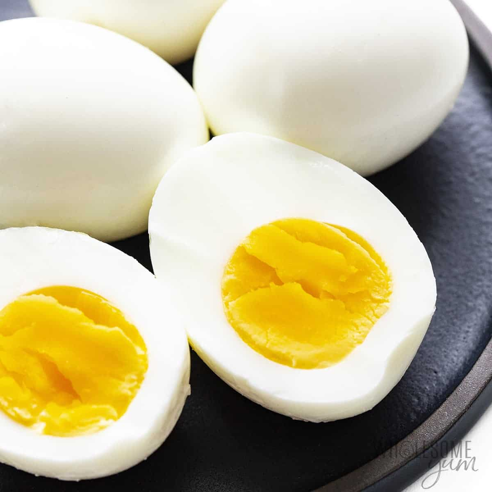

Boiled Eggs

Description
Boiled Eggs are a easy, fast, healthy and tasty recipe. This is how one should prepare them
Ingredients
Steps
- Put enough water in a pan, so that it can cover the eggs, and heat it.
- When the water starts boiling, put the eggs inside the pan, and let it boil for 10~12 minutes
- Add a pinch of salt, and a bit of vinegar(the vinegar helps peeling the egg's shell)
- Take the eggs out of the boiling water, and put them under cold water for 5 minutes.
- Crack the shells and peel the eggs. It is ready